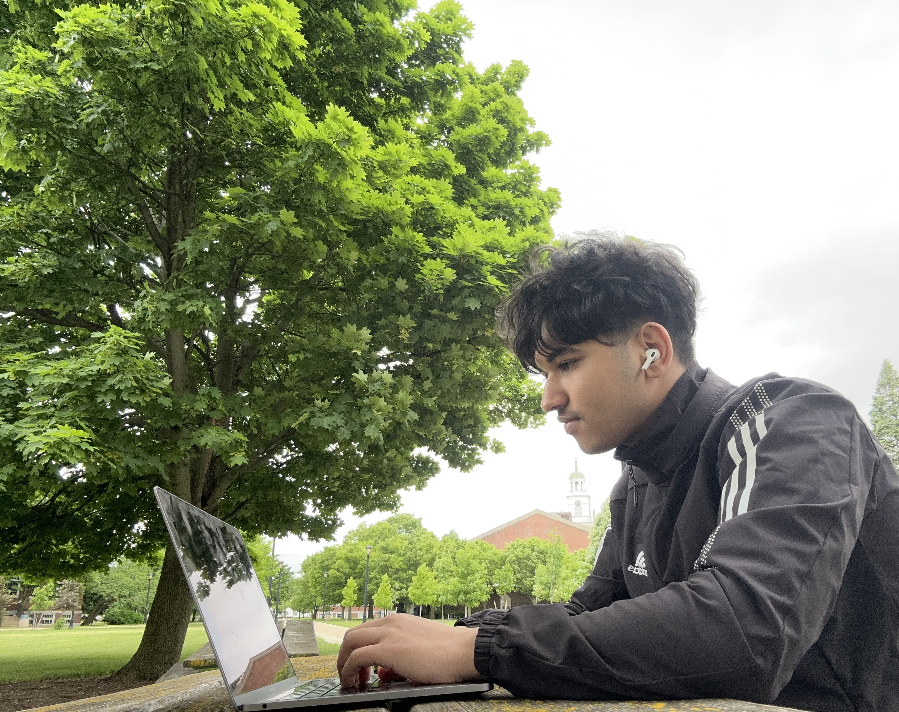
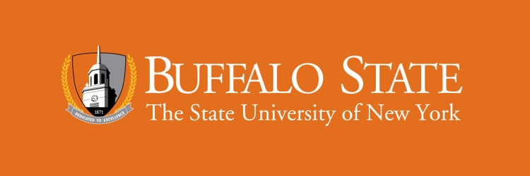
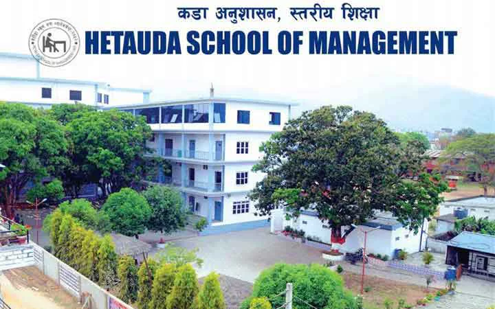
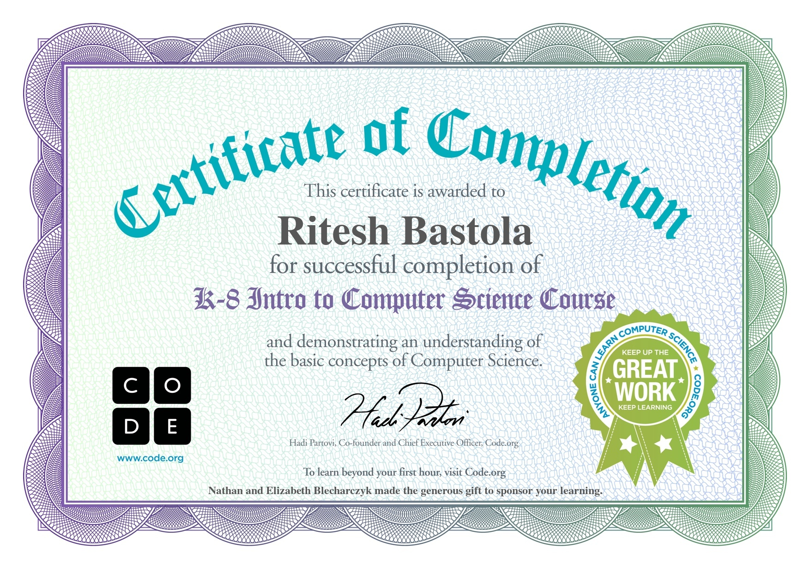
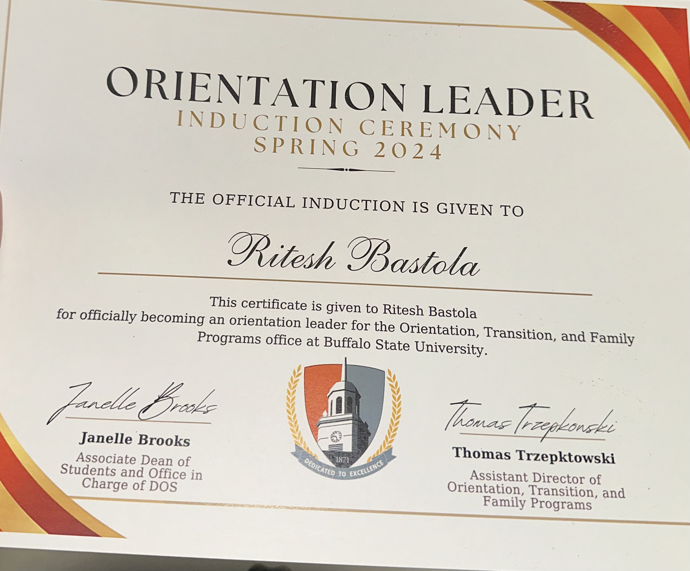

About Me

I'm a Computer Information Systems Student with a passion for creating intuitive and accessible web applications. Not only Html and CSS, I like to play with django framework in python. I believe in continuous learning and pushing myself to master new technologies.
Education

-
Bachelor of Science in Computer Information Systems
Buffalo State University, 2023-2027
Current GPA: 3.54 / 4.0
-
High School - Business Administration

Hetauda School Of Management, 2019 - 2022
Graduated with honors
GPA: 3.96 / 4.0
Parijat Marg 4, Hetauda 44107, Nepal
Certificates
-
Hours of Code

Code.org, 2024
-
Introduction to Python Programming
Coursera, 2024
Work Experience
-
Student Assistant
Student Leadership and Engagement, Aug 2023 - Present
Assisted on day to day operation of campbell student union. Activities included opening and closing of building, assigning tasks to building assitants, helping with creating layout for the events set-up and coordinating with greek life, orientation and family transitions and various other organizations.
-
Student Assistant
Dean Of students, Summer 2024
Assisted Dean's Office with handling sensitive student information with discretion, responding to routine emails and student questions Creating or distributing flyers and other promotional materials front desk support by answering phone calls, handling basic inquiries regarding orientation and transitions.
Leadership Experience
-
Vice President, International Students Organization
Buffalo State University, 2024 - Present
Organized weekly meetings, workshops, and cultural cafe for club members.
-
Orientation Leader

Led a team of college freshmen to help them during their transition.
Learn more about how to get in touch with me on the Contact page.